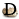
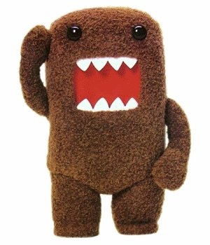

DescicloApp
Escolha o domínio alternativo
.org
.ws
.info
.as
.la
desnoticias.org
sophia.
roberto.
Ir a esta página
Editar ou criar essa página
Pesquisar
 Ir a Desciclopédia
 Minha página
Minha discussão
Minhas contribuições
Páginas vigiadas
Carregar arquivo
Enviar uma mensagem
Mudanças recentes
Facebook
Twitter
Blogger
Tumblr
Ajuda
 Minha discussão
Minha discussão
Minha discussão
Minha discussão
 Minhas contribuições
Minhas contribuições
 Páginas vigiadas
Páginas vigiadas  Carregar arquivo
Carregar arquivo
 Enviar uma mensagem
Enviar uma mensagem  Mudanças recentes
Mudanças recentes
 Facebook
Facebook Twitter
Twitter Tumblr
Tumblr Ajuda
Ajuda